MODULE 02 · THREADS
主线：六条跨讲线索
“主线”把散落在各讲中的问题串起来，不重复讲次全文。六个专题分别是：宇宙认知三段论、美《—》知、宇宙距离阶梯、从《天问》到 FAST、智能、直觉与“物理智觉”、Are we alone?。
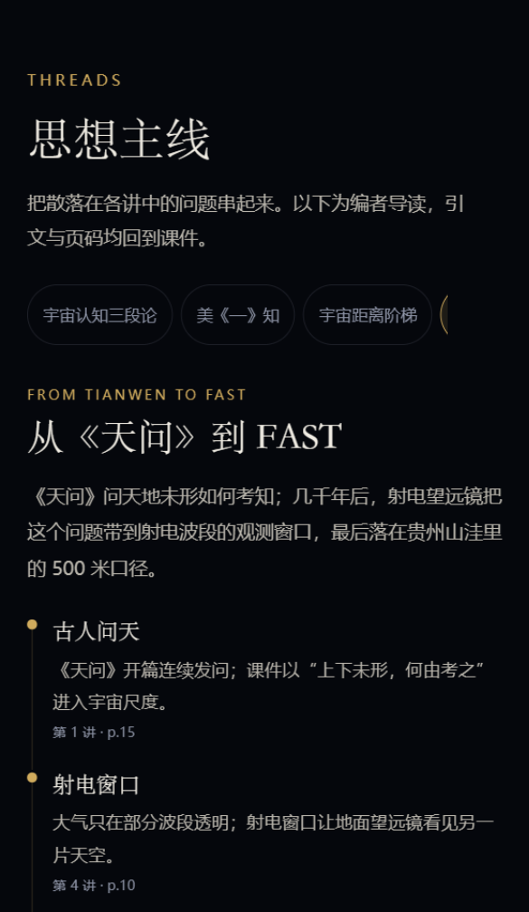

这不是把课件塞进网页，而是把七讲内容重新组织成一条“可读、可查、可探索”的阅读路径：先按课程星图读导读与关键原页，再沿思想主线回看跨讲观点，最后用索引、尺度和时间线把概念放到一张地图上。
课程 / 主线 / 索引 / 探索 / 原页五个 tab，分别回答“从哪里开始”“核心观点是什么”“某个词是什么”“尺度多大、还有什么不知道”“原始课件在哪里”。
讲次、概念、人物、专题、时间线、问题分别存放在 data/ 下；页面只负责取数与渲染，不做内容复制。
课程已完结，不再保留“待更新”占位或后续讲次接口；最后一讲导航显示“已是最后一讲”。
课件原页、封面、缩略图全部打包在小程序内；无外链、无 CDN 依赖，弱网也可阅读。
使用稳定版微信开发者工具，登录有该小程序权限的微信账号。
选择“导入项目”，项目目录选择压缩包解压后的根目录（即 project.config.json 所在目录），不要选 miniprogram/ 子目录。
miniprogramRoot 已配置为 miniprogram/，AppID 为 wx2e8e3cde13016238。没有权限时请管理员添加开发者。
导入后点击“编译”（Ctrl+R）即可在模拟器中打开首页；首页即课程星图，点击任意讲次进入详情。
如果暂时没有开发者工具权限，可直接阅读本 PDF；文档内含各模块截图、功能说明与验收结果。
说明：仓库为 private，未上传体验版；真机预览需要管理员在开发者工具中扫码授权。本展示文件与截图仅用于课程作业提交。
首页保留课程星图为主视觉：标题、主讲、课程使命与《天问》引文之后，按时间顺序排列七讲卡片。每张卡片显示讲次、标题、关键词与封面；点击进入讲次详情。
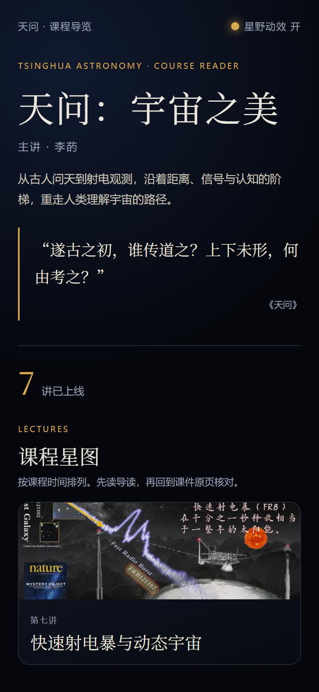
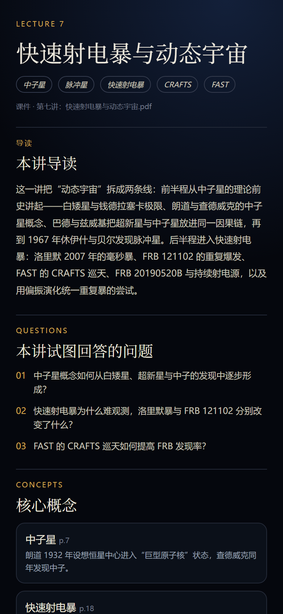
讲次详情还包含人物/装置、金句、10 张关键原页画廊、上一讲/下一讲与“继续探索”。第七讲为最后一讲，下一讲位置显示“已是最后一讲”。
“主线”把散落在各讲中的问题串起来，不重复讲次全文。六个专题分别是：宇宙认知三段论、美《—》知、宇宙距离阶梯、从《天问》到 FAST、智能、直觉与“物理智觉”、Are we alone?。

索引入口页用三张并列卡片进入概念词典、人物与装置、思想链；三处都支持搜索、分类/讲次筛选和详情页交叉链接。
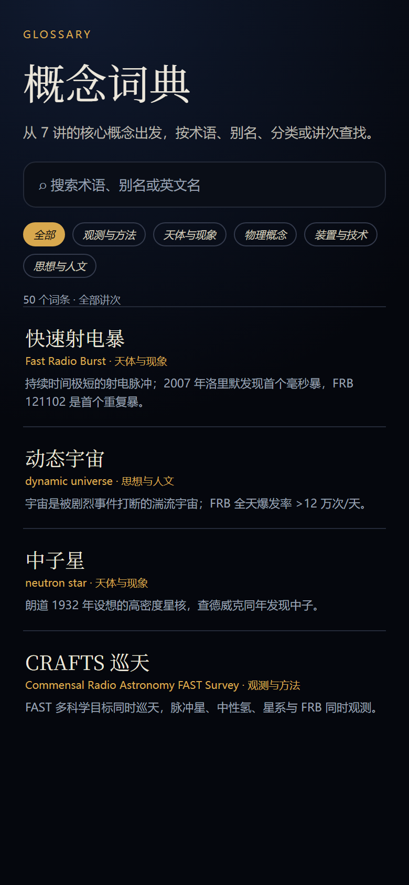
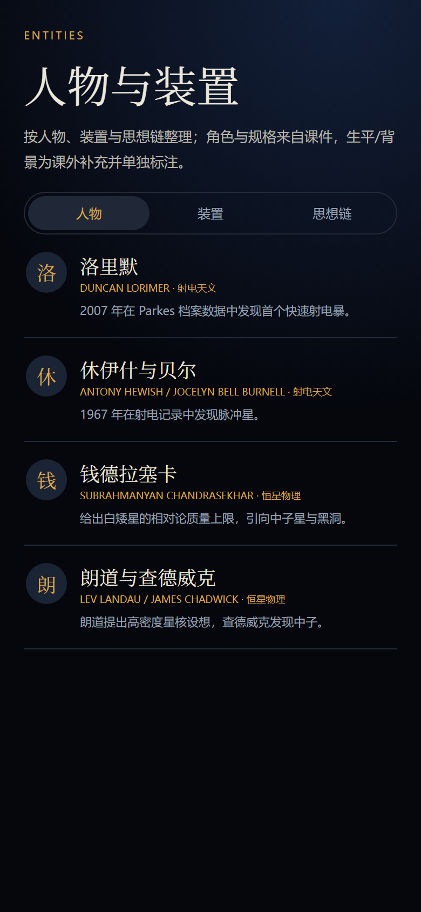
人物/装置详情把“课程中的角色”“贡献”“规格”与“课外补充的生平/背景”分开标注；思想链则把人物与装置串成可阅读的路径，点击节点可回到对应条目。

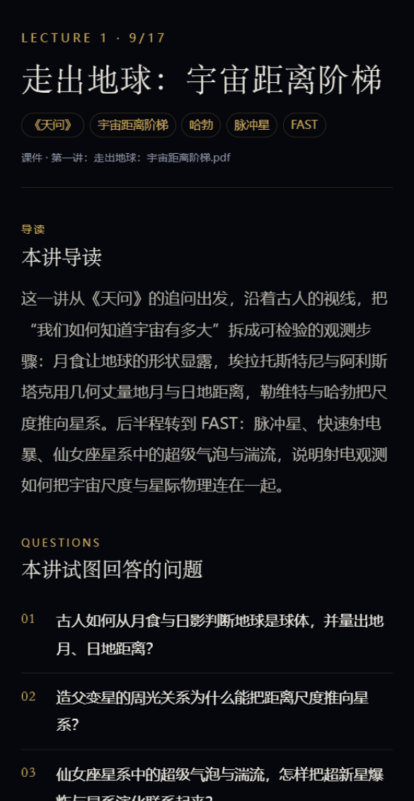
“探索”把课程里的数量级与开放问题做成可操作的视图：宇宙尺度滑杆、双时间线、未解之谜列表与详情。
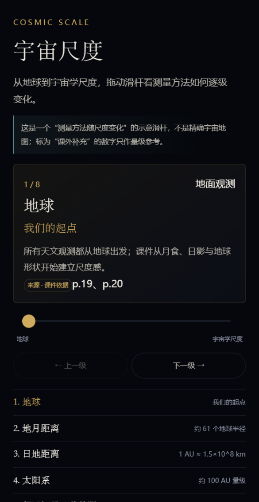

每个问题都拆成“课件已知 / 仍未知 / 为什么重要”三段，不把科普答案伪装成课件结论。第七讲把“快速射电暴从哪里来”补入 FRB 121102、CRAFTS 与持续射电源。
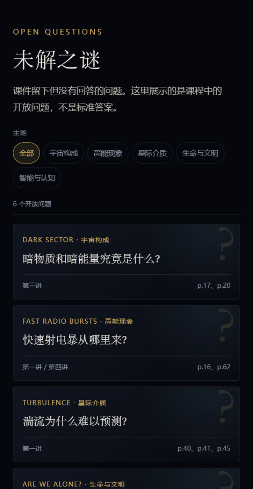
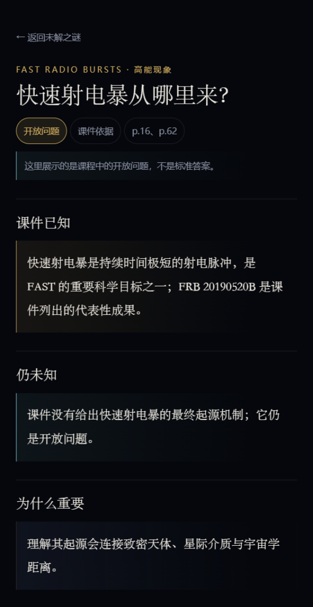
原页索引按讲次列出 70 张关键页，只显示“收录 10 页”，不显示授课日期；点击进入讲次详情后可直接定位到原页画廊。所有图片均从本地课件 PDF 渲染，不使用外链。
第六讲封面使用 p.28“爆炸制造并抛撒元素”，第七讲封面使用 p.23“FRB 121102”；封面只用于课程卡片，不替代原页画廊。
第七讲是课程最后一讲，把“动态宇宙”拆成两条线：前半程从中子星、脉冲星讲到超新星与致密残骸；后半程进入快速射电暴，落到洛里默暴、FRB 121102、CRAFTS 巡天、FRB 20190520B 与偏振演化统一机制。
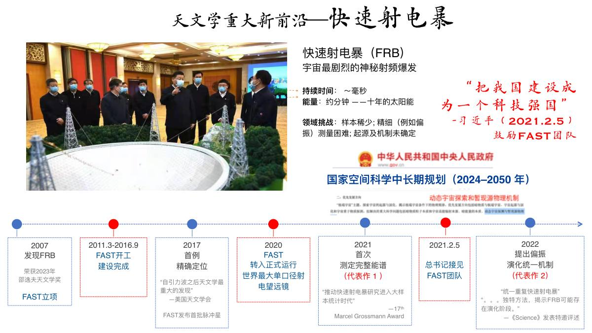
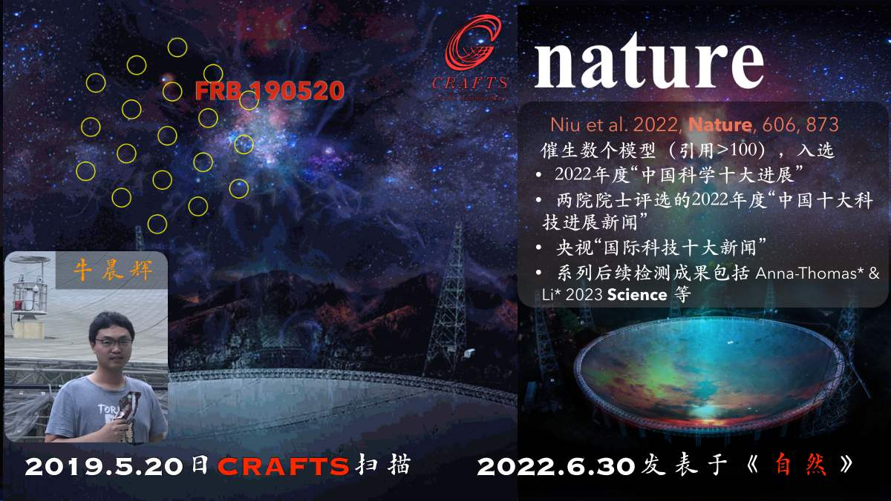
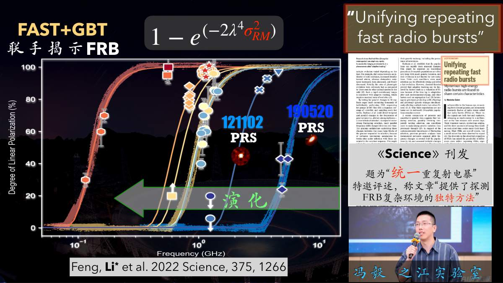
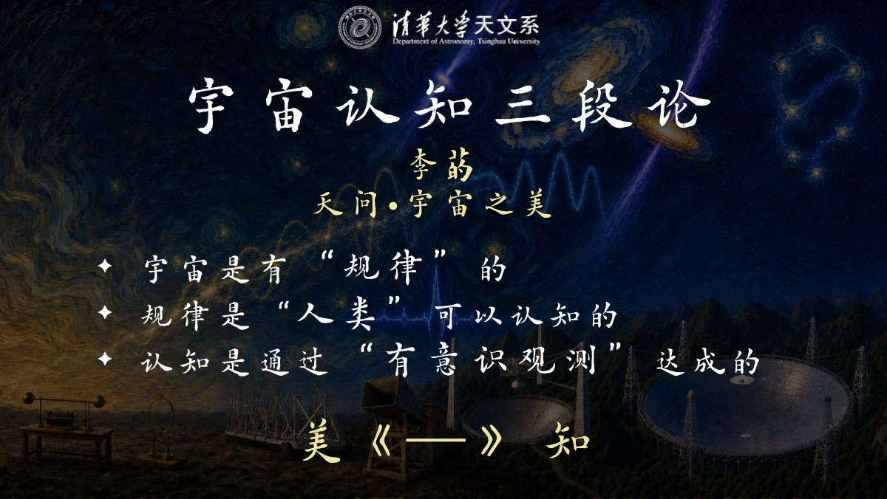
| 文件 | 用途 |
| 天问宇宙之美-课程小程序-展示.pdf | 本文件；包含模块说明与页面截图 |
| miniprogram/ + project.config.json | 可直接导入微信开发者工具的源码 |
| docs/showcase/ | 展示文件、HTML 源文件与截图 |
| README.md / scripts/ | 项目说明与内容/页面校验脚本 |
截图说明：首页、索引、原页、概念词典、人物与装置、第七讲详情为按当前数据与小程序样式生成的界面截图；尺度、时间线、未解之谜、专题、人物生平与讲次详情取自微信开发者工具 v2.1.0 验收运行，界面结构未变，数据已更新至 v2.3.0。